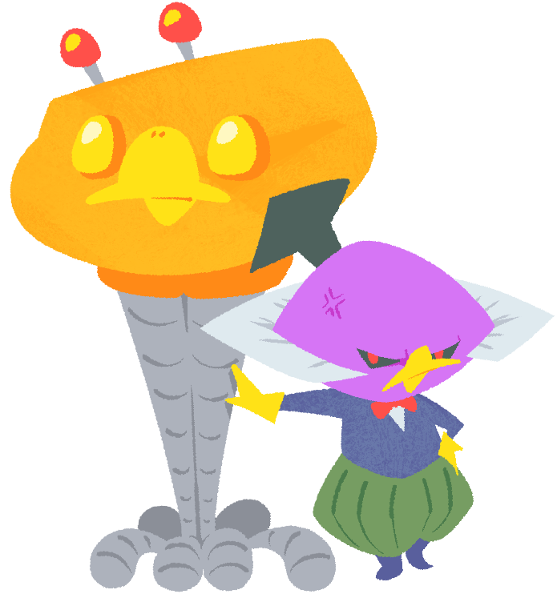

Professor Isogashima (Male)The one and only true villain of the Kururin series, only making an appearance in Kururin Squash! He is a crazy professor bird who believes that nobody cares about him, and wants to make everyone else busy because he thinks he would become homeless otherwise (although it is likely an excuse to get others to do things for him). He created three "Isogashimachines" to fight Kururin, and even has a vehicle that sort-of resembles the Helirin. He is quite foolish, often being the cause for his own mistakes. Throughout Kururin Squash!, he increasingly sees Kururin as a threat to his plans. He has a tendancy to ramble, which more often than not results in him getting hurt in one way or another, such as being hit by a support beam while not looking. |
 |